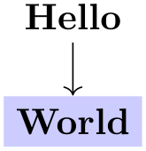
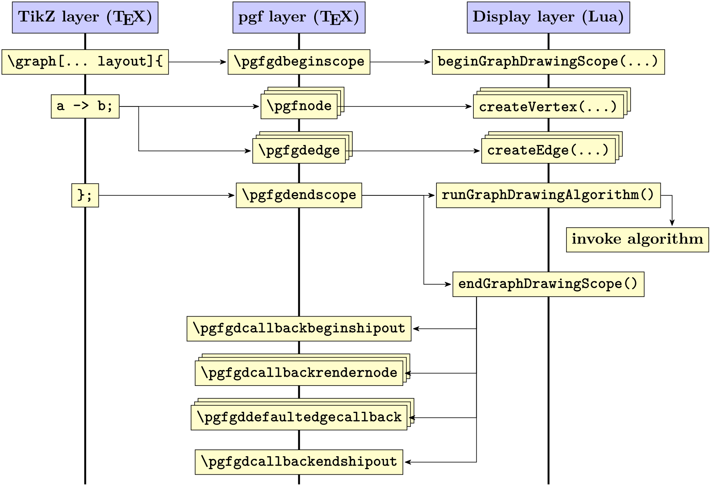
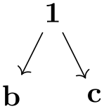
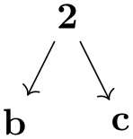
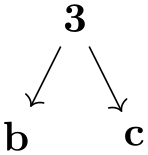
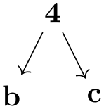
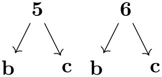

The TikZ and PGF Packages
Manual for version 3.1.10
Graph Drawing
29 Using Graph Drawing in PGF¶
by Till Tantau
-
PGF Library graphdrawing
\usepgflibrary{graphdrawing} %
LaTeX
and plain
TeX
\usepgflibrary[graphdrawing] %
ConTeXt
This package provides the core support for graph drawing inside
pgf. It does so by providing
pgf macros for controlling the graph
drawing system, but also implements the binding to the graph
drawing system (see Section 39
for details on bindings).
29.1 Overview¶
Just like everywhere else in pgf, TikZ is “just a convenient syntax” in the context of graph drawing. The “hard work” of binding the internal representations of nodes and edges with the graph drawing system written in Lua is not done by TikZ, but rather by a set of macros that are part of the basic pgf layer.
The documentation of the pgf part of the graph drawing system that is presented in the following includes only those macros that other TeX packages could conceivably call in order to use the graph drawing system without using TikZ; for instance, for efficiency reasons. (The internal callback functions defined in the graphdrawing library that are part of the binding between pgf and the graph drawing system are not documented, should not be called, and may change in the future.)
29.2 How Graph Drawing in PGF Works¶
The core idea behind graph drawing in pgf is that inside special graph drawing scopes whenever pgf creates a node, we intercept this node creation and do not immediately place the node. Rather, we pass it down to Lua part of the graph drawing system via calls to appropriate methods of the (Lua) class InterfaceToDisplay. The effect will be that the nodes are “tucked away” in some internal tables. For edges, we introduce a special command called \pgfgdedge that tells the graph drawing system that there is an edge between two tucked-away nodes. Then, at the end of the graph drawing scope, a graph drawing algorithm written in Lua starts to work on the graph by computing new positions for the nodes. Once the algorithm has finished, the graph drawing system starts sending back the nodes and edges to pgf via the methods of the class BindingToPGF. These methods reinsert some code into the TeX output stream that finally places the nodes at their final positions. Note that graph drawing algorithms are perfectly oblivious to all of this; indeed, the graph drawing algorithms can even be used independently of TeX.
Let us have a look at a simple example to see what happens when a graph is specified:

The key tree layout internally calls the key request scope and layout, which in turn calls the macro \pgfgdbeginscope, which starts a graph drawing scope inside the graph drawing system. Once this macro has been called, until the next call of \pgfgdendscope, all nodes that are created actually get passed down to the graph drawing engine. This is implemented on the lowest layer, namely by directly intercepting nodes freshly created using \pgfnode. In our example, this happens in two places: For the root node and for the World node. The graphs library and TikZ internally call the \pgfnode macro for these two nodes (after a large number of internal syntax translations, but the graph drawing system does not care about them).
Note that the node boxes will have been fully created before they are passed down to the graph drawing engine – only their final position is not yet fixed. It is not possible to modify the size of nodes inside the graph drawing engine, but you can create new nodes in certain situations.
In contrast, the single edge of the graph that is created by the -> command is not fully created before it is passed down to the graph drawing system. This would not really make sense since before the final positions of the nodes are fixed, we cannot even begin to compute the length of this edge, let alone where it should start or end. For this reason, on the upper TikZ layer, the normal edge creation that would be caused by -> via new -> is suppressed. Instead, the command \pgfgdedge is called. Similarly, inside a graph drawing scope, TikZ will suppress both the edge and the edge from parent command and cause \pgfgdedge to be called instead.
An overview of what happens is illustrated by the following call graph:

The above diagram glosses over the fact that the display layer does not actually call any of the macros of TeX directly, but uses a so called binding (see the class BindingToPGF). However, this will not be important for the present section since you cannot access the binding directly.
29.2.1 Graph Drawing Scopes¶
When the graph drawing system is active, some pretty basic things inside pgf change – such as the fact that nodes are no longer created in the normal manner. For this reason, the graph drawing system must be switched on and of explicitly through opening and closing a so called graph drawing scope. These scopes can, in principle, be nested, namely a graph contains a node that contains some text that in turn contains a subpicture that contains a drawing of a graph. However, this is not the same as subgraphs nodes and sublayouts, which are all part of the same graph drawing scope. Normally, graph drawing scopes are not nested.
Graph drawing scopes are created using the following commands:
-
\pgfgdbeginscope ¶
-
1. The display layer method beginGraphDrawingScope is called, which created a new graph drawing scope inside the graph drawing system and places it on top of an internal stack. From now on, all subsequent interface calls will refer to this scope until \pgfgdendscope is called, which will pop the scope once more.
-
2. Inside the TeX scope, nodes are not placed immediately. Rather, \pgfpositionnodelater, see Section 106.2.3, is used to call InterfaceToDisplay.createVertex for all nodes created inside the scope. This will cause them to be put inside some internal table.
-
3. Some additional ⟨code⟩ is executed, which has been set using the following command:
-
\pgfgdaddspecificationhook{⟨code⟩} ¶
This command adds the ⟨code⟩ to the code that is executed whenever a graph drawing scope starts. For instance, the TikZ library graphdrawing uses this macro to add some ⟨code⟩ that will redirect the edge and edge from parent path commands to \pgfgdedge.
-
-
4. \pgftransformreset is called.
-
5. The following TeX-if is set to true:
-
\ifpgfgdgraphdrawingscopeactive ¶
Will be true inside a graph drawing scope.
-
-
• Since nodes are not actually created before the end of the scope, you cannot reference these nodes. Thus, you cannot write
The problem is that we cannot connect (a) and (b) via a straight line since these nodes do not exist at that point (they are available only deeply inside the Lua).
-
• In order to create edges between nodes inside a graph drawing scope, you need to call the \pgfgdedge command, described below.
-
• If the graphs library has been loaded, the default positioning mechanisms of this library are switched off, leaving the positioning to the graph drawing engine. Also, when an edge is created by the graphs library, this is signalled to the graphdrawing library. (To be more precise: The keys new -> and so on are redefined so that they call \pgfgdedge instead of creating an edge.
-
• The edge path command is modified so that it also calls \pgfgdedge instead of immediately creating any edges.
-
• The edge from parent path command is modified so that is also calls \pgfgdedge.
-
• The keys append after command and prefix after command keys are modified so that they are executed only via late options when the node has “reached its final parking position”.
This macro starts a TeX scope inside which the following things happen:
The above has a number of consequences for what can happen inside a graph drawing scope:
Additionally, when TikZ is used, the following things also happen:
Note that inside a graph drawing scope you first have to open a (main) layout scope (using the \pgfgdbeginlayout command described later on) before you can add nodes and edges to the scope.
-
\pgfgdendscope ¶
-
1. The special treatment of newly created boxes is ended. Nodes are once more created normally.
-
2. The effects of the ⟨code⟩ that was inserted via the specification hook command also ends (provided it had no global effects).
-
3. We call InterfaceToDisplay.runGraphDrawingAlgorithm. This will cause the algorithm(s) for the graph to be executed (since a graph can have sublayouts, several algorithms may be run). See Section 29.3 below.
-
4. Next, we call InterfaceToDisplay.endGraphDrawingScope. This causes all nodes that were intercepted during the graph drawing scope to be reinserted into the output stream at the positions that were computed for them. Also, for each edge that was requested via \pgfgdedge, the callback macro is called (see below).
This macro is used to end a graph drawing scope. It must be given on the same TeX grouping level as the corresponding \pgfgdbeginscope. When the macro is called, it triggers a lot of new calls:
Inside a graph drawing scope, nodes are automatically passed down to the graph drawing engine, while for edges a command has to be called explicitly:
-
\pgfgdedge{⟨first node⟩}{⟨second node⟩}{⟨edge direction⟩}{⟨edge options⟩}{⟨edge nodes⟩} ¶
-
• -> indicates a directed edge (also known as an arc) from ⟨first node⟩ to ⟨second node⟩.
-
• -- indicates an undirected edge between ⟨first node⟩ and ⟨second node⟩,
-
• <- indicates a directed edge from ⟨second node⟩ to ⟨first node⟩, but with the “additional hint” that this is a “backward” edge. A graph drawing algorithm may or may not take this hint into account.
-
• <-> indicates a bi-directed edge between ⟨first node⟩ and ⟨second node⟩.
-
• -!- indicates that the edge from ⟨first node⟩ to ⟨second node⟩ is “missing”.
This command is used to tell the graph drawing engine that there is an edge between ⟨first node⟩ and ⟨second node⟩ in your graph. The “kind” of connection is indicated by ⟨direction⟩, which may be one of the following:
Note that in all cases, the syntactic digraph will contain an arc from ⟨first node⟩ to ⟨second node⟩, regardless of the value of ⟨direction⟩. The ⟨direction⟩ is “just” a “semantic annotation”.
The parameters ⟨edge options⟩ and ⟨edge nodes⟩ are a bit more tricky. When an edge between two vertices of a graph is created via \pgfgdedge, nothing is actually done immediately. After all, without knowing the final positions of the nodes ⟨first node⟩ and ⟨second node⟩, there is no way of creating the actual drawing commands for the edge. Thus, the actual drawing of the edge is done only when the graph drawing algorithm is done (namely in the macro \pgfgdedgecallback, see later).
Because of this “delayed” drawing of edges, options that influence the edge must be retained until the moment when the edge is actually drawn. Parameters ⟨edge options⟩ and ⟨edge nodes⟩ store such options.
Let us start with ⟨edge options⟩. This parameter should be set to a list of key–value pairs like
/tikz/.cd, color=red, very
thick, orient=down
Some of these options may be of interest to the graph drawing algorithm (like the last option) while others will only be important during the drawing of edge (like the first option). The options that are important for the graph drawing algorithm must be pushed onto the graph drawing system’s option stack.
The tricky part is that options that are of interest to the graph drawing algorithm must be executed before the algorithm starts, but the options as a whole are usually only executed during the drawing of the edges, which is after the algorithm has finished. To overcome this problem, the following happens:
The options in ⟨edge options⟩ are executed “tentatively” inside \pgfgdedge. However, this execution is done in a “heavily guarded sandbox” where all effects of the options (like changing the color or the line width) do not propagate beyond the sandbox. Only the changes of the graph drawing edge parameters leave the sandbox. These parameters are then passed down to the graph drawing system.
Later, when the edge is drawn using \pgfgdedgecallback, the options ⟨edge options⟩ are available once more and then they are executed normally.
Note that when the options in ⟨edge options⟩ are executed, no path is preset. Thus, you typically need to start it with, say, /tikz/.cd. Also note that the sandbox is not perfect and changing global values will have an effect outside the sandbox. Indeed, “putting things in a sandbox” just means that the options are executed inside a TeX scope inside an interrupted path inside a TeX box that is thrown away immediately.
The text in ⟨edge nodes⟩ is some “auxiliary” text that is simply stored away and later directed to \pgfgdedgecallback. This is used for instance by TikZ to store its node labels.
-
\pgfgdsetedgecallback{⟨macro⟩} ¶
This command allows you to change the ⟨macro⟩ that gets called form inside the graph drawing system at the end of the creation of a graph, when the nodes have been positioned. The ⟨macro⟩ will be called once for each edge with the following parameters:
⟨macro⟩{⟨first node⟩}{⟨second node⟩}{⟨direction⟩}{⟨edge options⟩}{⟨edge nodes⟩}
{⟨algorithm-generated options⟩}{⟨bend information⟩}{⟨animations⟩}
The first five parameters are the original values that were passed down to the \pgfgdedge command.
The ⟨algorithm-generated options⟩ have been “computed by the algorithm”. For instance, an algorithm might have determined, say, flow capacities for edges and it might now wish to communicate this information back to the upper layers. These options should be executed with the path /graph drawing.
The parameter ⟨bend information⟩ contains algorithmically-computed information concerning how the edge should bend. This will be a text like (10pt,20pt)--(30pt,40pt) in TikZ-syntax and may include the path commands --, .. (followed by Bézier coordinates), and --cycle.
The last parameter ⟨animations⟩ contains algorithmically-generated animation commands (calls to \pgfanimateattribute). The whom will be set to pgf@gd.
The default ⟨macro⟩ simply draws a line between the nodes. When the graphdrawing library of the TikZ layer is loaded, a more fancy ⟨macro⟩ is used that takes all of the parameters into account.
29.3 Layout Scopes¶
As described in Section 28.10, the graph drawing engine does not always apply only a single algorithm. Rather, several different algorithm may be applied to different parts of the graph. How this happens, exactly, is governed by a hierarchy of layouts, which are setup using the commands \pgfgdbeginlayout and \pgfgdendlayout.
-
\pgfgdbeginlayout ¶
This command first starts a new TeX scope and then informs the display layer that a new (sub)layout should be started. For each graph there may be a hierarchy of layouts, each of which contains a certain number of vertices and edges. This hierarchy is created through calls to this macros and the corresponding calls of \pgfgdendlayout. For each graph drawing scope there has to be exactly one main layout that encompasses all nodes and edges and also all sublayouts. Thus, after a graph drawing scope has been opened, a layout scope also needs to be opened almost immediately.
For each layout created via this macro, a graph drawing algorithm will be run later on the subgraph of all nodes that make up the layout. Which algorithm is run for the layout is dictated by which layout key (one of the ... layout keys) is “in force” when the macro is called. Thus, using a layout key for selecting an algorithm must always be done before the layout is started. (However, see the discussion of layout keys in the next subsection for more details on what really happens.)
A vertex can be part of several layouts, either because they are nested or because they overlap (this happens when a node is later on added to another layout by calling \pgfgdsetlatenodeoption). This means that it is not immediately obvious how conflicts arising from the different ways different algorithms “would like to place nodes” should be resolved. The method for this resolving is detailed in Section 28.10.3.
-
\pgfgdendlayout ¶
This command ends the TeX scope of the current layout. Once closed, no nodes or edges can be added to a layout.
-
\pgfgdsetlatenodeoption{⟨node name⟩} ¶
This command can only be called when the node named ⟨node name⟩ has already been created inside the current graph drawing scope. The effect of calling this macro will be that all options currently on the graph drawing system’s option stack will be added to the node’s option, possibly overwriting the original option settings. Furthermore, the node will become part of all layouts currently on the option stack. This means that you can use this command to add a node to several layouts that are not included in one another.
29.4 Layout Keys¶
Layout keys are keys like tree layout or layered layout that are used to select a specific graph drawing algorithm. From the graph drawing system’s point of view, these keys “just” select an algorithm and when several layout keys are used in a row, the last one would “win”; just as when you say orient=90 directly followed by orient=0, the result is that the orient key is set to 0 because the last key “wins”.
Unfortunately, if keys like tree layout were “just” to select an algorithm, we would still need a key or some special syntax to actually start a (sub)layout. In early versions of the system this was exactly what people had to do and this was somewhat awkward. Because of this problem, the behavior of the layout keys in pgf (and only there, other display layers need to implement their own behavior) is now a bit more involved. When you use a key like tree layout (more precisely, any key that was declared as an algorithm key on the algorithm layer of the graph drawing system) in any scope in pgf, the following happens:
-
1. The graph drawing system is told that a specific algorithm has been selected (the Reingold–Tilford-algorithm in this case; this information was communicated to the graph drawing system during the declaration of the algorithm). Being “told” about this means that a special entry is pushed onto the current options stack of the graph drawing system.
-
2. An internal “request” for a “scope and a layout” is made. This has several effects:
-
3. We first test whether we are already inside a layout scope. If not, we use \pgfgdbeginscope to open a graph drawing scope. This scope will be closed appropriately (see \pgfgdsetrequestcallback for details).
-
4. Next, a layout scope is opened using \pgfgdbeginlayout. It will also be closed appropriately.
The net effect of the above is that the first use of a layout key in a picture starts both a graph drawing scope and also a main layout, while subsequent uses of layout keys inside a picture will only open sublayouts.
-
\pgfgdsetrequestcallback{⟨macro⟩} ¶
This command sets up ⟨macro⟩ as the macro that is called whenever a layout key “requests” that a layout and, possibly, a graph drawing scope is opened. When ⟨macro⟩ is called, it gets two parameters, the ⟨begin code⟩ and the ⟨end code⟩. In addition to whatever setup the ⟨macro⟩ would like to do, it should execute the ⟨begin code⟩ at the beginning of a TeX scope (the code will open graph drawing and layout scopes) and the ⟨end code⟩ at the end of the same TeX scope.
The need for this slightly strange macro arises from the fact that in TikZ we often write things like [spring layout,node sep=2cm]. The point is that when the spring layout key is executed, we do not wish to open a layout scope immediately. Rather, this should happen only after the option nodes sep=2cm has been executed. For this reason, TikZ sets up a special ⟨macro⟩ that “delays” the execution of the ⟨begin code⟩ until the end of the opening of the next scope.
Because of this, in TikZ layout keys can only be used as an option when a TikZ scope is started. Thus, you can pass them to \tikz, to {tikzpicture}, to \scoped, to {scope}, to graph, and to {graph}. For instance, the tree layout option can be used in the following ways:

\usetikzlibrary {graphs,graphdrawing} \usegdlibrary
{trees}
\tikz [tree layout] \graph {1
->
{b,c}};
\tikz \graph [tree layout] {2
->
{b,c}};
\tikz \path graph
[tree layout] {3
->
{b,c}};
\begin{tikzpicture}[tree layout]
\graph {4
->
{b,c}};
\end{tikzpicture}
\begin{tikzpicture}
\scoped [tree layout] \graph {5
->
{b,c}};
\begin{scope}[tree layout, xshift=1.5cm]
\graph {6
->
{b,c}};
\end{scope}
\end{tikzpicture}
You can not use layout keys with a single node or on a path. In particular, to typeset a tree given in the child syntax somewhere inside a {tikzpicture}, you must prefix it with the \scoped command:

\usetikzlibrary {graphdrawing} \usegdlibrary {trees}
\begin{tikzpicture}
\scoped [tree layout]
\node {root}
child
{ node
{left
child} }
child
{ node
{right
child} };
\end{tikzpicture}
Naturally, the above could have been written more succinctly as
Or even more succinctly:
29.5 Parameters¶
When a graph drawing algorithm starts working, a set of options, called “graph drawing parameters” or just “parameters” can influence the way the algorithm works. For instance, a graph drawing parameter might be the average distance between vertices which the algorithm should take into account. Another example might be the fact the certain nodes are special nodes and that a certain edge should have a large label.
These graph drawing parameters are different from “usual” pgf options: An algorithmic parameter influences the way the algorithm works, while usual options influence the way the result looks like. For instance, the fact that a node is red is not a graph drawing parameter, while the shape of a node might be an graph drawing parameter.
The possible graph parameters are declared by the algorithmic layer through the declare method; you cannot declare parameters on the pgf layer since this would not be compatible across different display systems.
Users use a graph parameter in the same way as a normal key. The difference is that each time a key representing a graph drawing parameter is used, a special function of the graph drawing system’s interface is called to “push” the parameter onto an internal option stack (and elements are popped from this stack whenever the TeX scope closes in which the key was used).
The net effect of all of this is that the graph drawing system keeps track of a stack of option in parallel to TeX. You cannot, however, access the current values of graph drawing parameters from TeX since they are tucked away deep inside the graph drawing system.
29.6 Events¶
Events are used to pass information from the parser about the syntactic structure of a graph to graph drawing algorithms. Consider, for instance, a graph that is actually a tree in which some node “misses” its first child. In this case, the information that the child is missing is neither part of any node (because the node is missing, after all) nor is it an option of the whole graph. However, events are created by the parser to allow an algorithm to reconstruct the fact that the child is missing. Naturally, graph drawing algorithms may choose to ignore events and most will.
Most of the creation and handling of events is done automatically. The only reason you might wish to use the following commands is when you write a “parser extension” together with a new graph drawing algorithm. For instance, you might come up with new options that, when used, trigger events.
-
\pgfgdevent{⟨kind⟩}{⟨parameter⟩} ¶
Calls createEvent of the graph drawing system’s interface class. This creates a new Event object on the Lua layer whose kind field is set to ⟨kind⟩ and the parameters field to ⟨parameter⟩. You must be inside a graph drawing scope to use this command.
-
\pgfgdbegineventgroup{⟨parameter⟩} ¶
Starts an event group. This just means that an Event of kind begin is created with the given ⟨parameter⟩.
-
\pgfgdendeventgroup ¶
Ends an event group. This is done by adding an event of kind end without any parameters to the event string.
-
\pgfgdeventgroup{⟨parameters⟩} ¶
Starts an event group just like \pgfgdbegineventgroup, but adds a corresponding closing end event at the end of the current TeX group (using \aftergroup).
29.7 Subgraph Nodes¶
-
\pgfgdsubgraphnode{⟨name⟩}{⟨node options⟩}{⟨node text⟩} ¶
A subgraph node is a node that “surrounds” the nodes of a subgraph. The special property of a subgraph node opposed to a normal node is that it is created only after the subgraph has been laid out. However, the difference to a collection like hyper is that the node is available immediately as a normal node in the sense that you can connect edges to it.
What happens internally is that subgraph nodes get “registered” immediately both on the pgf level and on the Lua level, but the actual node is only created inside the layout pipeline using a callback. The actual node creation happens when the innermost layout in which the subgraph node is declared has finished.
When you create a subgraph node using this macro, you also start a collection (of an internal kind) that stores the subgraph. All following nodes in the current TeX scope will become part of this collection.
The ⟨name⟩ is the node name by which you can refer to this node in the following. The ⟨node options⟩ are normal pgf options (like red or draw or circle) that will influence the appearance when it is created later on. The ⟨node text⟩ is the text that will be passed to \pgfnode upon creation of the node.
See InterfaceToDisplay.pushSubgraphVertex for more details.